research/python/research-director/, venv pinned in requirements.txt): the market's own states with today's probability (section 2), sector change points and a rotation graph of Alan's cohorts (section 3), and a Reality Check / SPA test over every rule family we have published (section 4). Section 5 says in one line each which published findings survive and which look like data-snooping. Every chart is a saved PNG in charts/; every number is read from data/*.json; every input file is listed with its hash at the end. Nothing was fetched: the bars are the files the 28 Sep lanes saved as served from the chart API. No key, database or price table was touched.Ordered by value to how Alan trades: execution, patience, market-first, leaders. The first three ran today and are sections 2–4.
STOLEN FROM
hmmlearn · Hamilton (1989) regime switching, as in statsmodels' Markov regression notebook · Kritzman, Page & Turkington (2012), Regime shifts: implications for dynamic strategies, FAJ · QuantStart, Market regime detection using hidden Markov models
The question. Do two or three market states fall out of the S&P's own returns and the VIX without anyone drawing a line, how long does each last, and which state are we in today, using only bars up to today?
Method. Gaussian hidden Markov model (2 and 3 states) on daily log return + log VIX (1990→), on returns alone (1928→), and on SPY + equal-weight spread + VIX÷VIX3M (2006→). Parameters fitted on the first half only; every later day's probability is filtered forward (no smoothing, no lookahead). Forward return and forward realised volatility by state, block-bootstrap ranges. Change points in realised volatility as a second opinion (ruptures PELT).
Data we have. ^GSPC 1927→, ^VIX 1990→, ^VIX3M 2006→, SPY and RSP 2003→ — all in the chart-API cache already.
Value to Alan. MARKET-FIRST and PATIENCE: one number each morning that says whether the tape is in its calm or its stressed state, with how long such states usually last. It is the second regime label the statistician asked for (N8), next to the Station's cloud order.
Cost. Ran today in about 2 minutes of compute; nightly refresh is a 10-second job.
STOLEN FROM
ruptures (PELT: Killick, Fearnhead & Eckley 2012) · RRG-Lite (JdK RS-Ratio / RS-Momentum, open approximation) · StockCharts, Relative Rotation Graphs · Adams & MacKay (2007), Bayesian online changepoint detection — the streaming form for a notification
The question. Instead of a fixed 16/72/646-session window, let a change-point search say when each sector's pace against SPY changed. Does a freshly detected change carry forward? And this week, which of Alan's 20 cohorts are leading, weakening, lagging or improving against SPY?
Method. PELT on weekly relative returns per sector (penalty stated at two strengths). An online version that only sees bars to each decision week, flags a change under 8 weeks old, and measures the next 13 weeks, split 2008–2016 / 2017–2026. RRG under the public JdK approximation for the 20 cohorts (equal-weight of today's members) and the 11 sectors, with 8-week tails and the quadrant checked at three windows.
Data we have. 11 SPDR sectors and SPY 2003→ (sector-rotation cache); the 364 served names 2003→ (candles-f5 cache); the M45 cohort list.
Value to Alan. LEADERS and MARKET-FIRST: which cohorts to be patient in and which to rotate toward; a dated 'trend changed' flag rather than a rank that reshuffles every quarter.
Cost. Ran today in about 3 minutes. The online flag as a nightly job is cheap; the Bayesian streaming form is a day's work.
STOLEN FROM
White (2000), A Reality Check for Data Snooping, Econometrica · Hansen (2005), A test for superior predictive ability, JBES · Sullivan, Timmermann & White (1999), Data-snooping, technical trading rule performance, and the bootstrap, J. Finance — 7,846 rules on the Dow · arch: SPA, StepM, MCS
The question. Of the RSI rungs, RSI-with-200-day states, 200-day distance bands, VIX levels and calendar months our studies searched, does the best rule beat 'any day' once the whole search is counted?
Method. Each rule = long h sessions after it fires (h = 5, 20, 60), benchmark = long the same share of days unconditionally. Hansen's SPA and White's Reality Check p-values per family and over the union (stationary bootstrap, block 60); Romano–Wolf StepM for the set of survivors; the best rule chosen on the first half judged on the second.
Data we have. SPY, QQQ, IWM, DIA 2003→; the S&P index 1928→; VIX, VIX3M.
Value to Alan. EVERYTHING: it says which of our findings deserve a card on the stats tab and which are the best of a hundred coin flips.
Cost. Ran today in about 4 minutes. Rerun for every new family is minutes.
STOLEN FROM
Moreira & Muir (2017), Volatility-Managed Portfolios, J. Finance (NBER w22208) · Harvey, Hoyle, Korgaonkar, Rattray, Sargaison & van Hemert (2018), The impact of volatility targeting
The question. If Alan sized every position by the inverse of last month's realised volatility (or the VIX), holding more when calm and less when stressed, what would it have done to the drawdowns and the Sharpe of SPY, QQQ, the sectors and the cohort indexes, and how often would it have him trading?
Method. Weight_t = target vol ÷ realised vol over the last 20 sessions, capped; compare with buy-and-hold on return, worst drawdown, time under water; SPA over the target-vol and window grid; turnover as the cost line.
Data we have. Every daily series in the cache; the 364 names for the cohort indexes.
Value to Alan. PATIENCE and EXECUTION: the 'dynamic position sizing to market behaviour' Alan asked for, from a published rule rather than a hunch, with the trading it costs.
Cost. Half a day in Python; the tearsheet tool (quantstats) is on the adopt list.
STOLEN FROM
Faber (2007), A Quantitative Approach to Tactical Asset Allocation · Hurst, Ooi & Pedersen (2017), A Century of Evidence on Trend-Following Investing (AQR) · Moskowitz, Ooi & Pedersen (2012), Time Series Momentum, JFE
The question. Is 'deep below the 200-day is a problem' the same fact the trend-following literature reports — that being out below the 10-month average cuts the worst drawdowns by half at the price of a lower win rate — and does it hold across our indexes, sectors, commodities and cohorts, not just SPY?
Method. Faber's monthly rule and a daily 200-day version on 30+ instruments pooled with an instrument effect; outcome distributions in the instrument's own usual days; SPA over the lookback grid; the S&P since 1928 as the walk-forward check. This is the statistician's N5 given a published yardstick.
Data we have. ^GSPC 1928→, ^NDX, ^RUT, ^DJI, SPY/QQQ/IWM/DIA, 11 sectors, gold, oil, BTC, TLT — all cached.
Value to Alan. PATIENCE and MARKET-FIRST: a measured risk-cut rule, with the cost of whipsaws counted.
Cost. One day.
STOLEN FROM
George & Hwang (2004), The 52-Week High and Momentum Investing, J. Finance · Jegadeesh & Titman (1993), Returns to buying winners and selling losers, J. Finance
The question. Alan's thesis says extended is extended. The published evidence says names near their 52-week high keep going for 6–12 months. Which is right for our names, by market-cap tranche and by market state?
Method. Monthly cross-section of the served names: nearness to the 52-week high and own RSI percentile as two rankings; forward 1/3/6/12-month returns by decile; alphalens tear sheet (quantile returns, information coefficient, turnover); conditioned on the 200-day side and the HMM state; FDR over deciles and horizons.
Data we have. The 364 names 2003→ and the FMP caps file (meta-cohorts-caps) for the tranches; the scout's whole-market file when the Fly job runs.
Value to Alan. LEADERS and PATIENCE: whether to trim leaders because they are extended, or hold them because that is what leaders do.
Cost. One day; survivorship caveat until the point-in-time universe exists.
STOLEN FROM
Goldberg & Mahmoud (2017), Drawdown: from practice to theory and back again · Bailey & López de Prado (2014), Drawdown-based stop-outs and the triple penance rule · Greenwood, Shleifer & You (2019), Bubbles for Fama, JFE (NBER w23191)
The question. For every index, sector, commodity and cohort: the whole distribution of drawdown depth × time to the low × time back to the high, as survival curves. And for the sigma runs Alan sees in gold: after a 100%-in-two-years run, how often did a 40% fall follow within two years, and how long did recovery take?
Method. Drawdown episodes from swing highs; Kaplan–Meier curves for time-under-water with open episodes censored; the triple-penance ratio (recovery takes about three times the fall's duration) tested; Greenwood–Shleifer–You run-up events on gold, silver, oil, BTC and the AI cohorts.
Data we have. All cached daily series; ^GSPC to 1928 for the long record.
Value to Alan. PATIENCE: how long a hole usually takes to climb out of, as a curve, not a rule; and a measured answer to 'gold parabolic — what followed'.
Cost. One day.
STOLEN FROM
Daniel & Moskowitz (2016), Momentum Crashes, JFE (NBER w20439) · Kenneth French's data library (momentum factor, 1927→)
The question. Alan noticed leaders trail SPY after bottoms. The published fact is that past winners lag hardest in the rebound out of a bear market, then lead again. How many weeks does the lag last for our leaders and cohorts, and is it the 'move to another good name' moment or the moment to wait?
Method. Event study on SPY swing lows (S9 pivots) with the prior-12-month top decile vs the rest, weekly relative returns for 52 weeks after, conditioned on the 200-day side and the HMM state; French's momentum factor as the century-long check.
Data we have. The 364 names and SPY (cache); French's factor is a public CSV (no key).
Value to Alan. LEADERS and EXECUTION: a measured window in which buying the leaders after a low is early.
Cost. Half a day.
STOLEN FROM
Lou, Polk & Skouras (2019), A tug of war: Overnight versus intraday expected returns, JFE · Cliff, Cooper & Gulen (2008), Return differences between trading and non-trading hours
The question. For the indexes and each cohort, how much of the return came overnight (close to open) against during the session (open to close), and does it change with the market state? If most of a leader's return is the gap, a limit order at yesterday's close never fills the good days.
Method. Split every daily bar into close→open and open→close; cumulative lines and yearly shares; by cohort, by HMM state, by earnings-week or not; block-bootstrap ranges.
Data we have. Daily open and close in every cached bar; the chart API's intraday bars for a finer cut.
Value to Alan. EXECUTION: whether the tranche orders should rest at the open, at the close, or as gaps.
Cost. Half a day; data already in hand.
STOLEN FROM
Zweig breadth thrust (1986, Winning on Wall Street); StockCharts definition · IslamBaraka90, cumulative advance–decline line built without look-ahead
The question. The breadth file starts on 23 Sep 2026, but the cache holds daily bars for 364 names back to 2003: rebuild % above the 50-day and 200-day, the advance–decline line and new highs/lows for 23 years, then ask whether a breadth thrust (share above the 50-day from under 40% to over 60% inside 10 sessions) preceded anything, with false alarms counted.
Method. Breadth series from the cached panel (survivorship: today's names); thrust events as episodes; hit rate and false-alarm rate at every threshold (ROC), lead times, block bootstrap; the whole-market file from the scout job replaces the panel when it exists.
Data we have. candles-f5 cache (364 names 2003→).
Value to Alan. MARKET-FIRST: the 'rising tide' gauge with 23 years of history instead of five days.
Cost. Half a day now; the survivorship fix waits on the Fly one-off.
Two more, not in the ten: Tranches at technical levels versus a lump sum (Vanguard 2012, Dollar-cost averaging just means taking risk later): simulate Alan's ladder of levels against buying at once, per pullback depth. The Geiger composite and its components as a factor: alphalens tear sheet and the deflated Sharpe ratio (Bailey & López de Prado 2014) over the parameter grid that made it.
The question. Let the data name the states. A hidden Markov model is told only that there are two (or three) hidden states, each with its own typical daily return and typical wildness, and that the market stays in a state for a while before switching. It works out from the bars alone which state each day most likely belongs to. Nothing is drawn by hand: no RSI line, no 200-day, no VIX level chosen by eye.
Today, 2026-09-25: CALM. The two-state model on the S&P 500 and the VIX (1990 →) puts today at 1.00 CALM / 0.00 STRESS with parameters frozen at end-2007 (walk-forward), and 1.00 / 0.00 with the whole record's parameters. The three-state version reads CALM 0.01 · MIDDLE 0.99 · STRESS 0.00: today sits in the middle state, whose typical VIX is 17.8. The model that also sees the equal-weight spread and the VIX curve (2006 →) reads CALM 1.00 · MIDDLE 0.00 · STRESS 0.00. The returns-only model on the S&P since 1928 agrees: CALM 0.99.
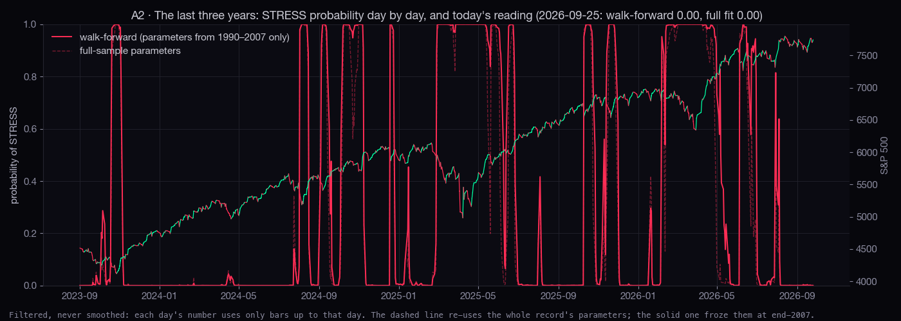
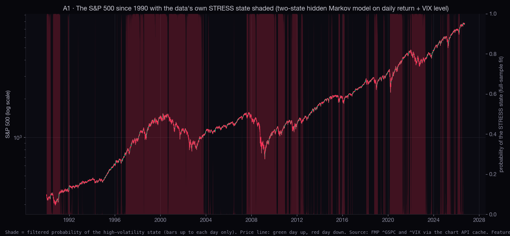
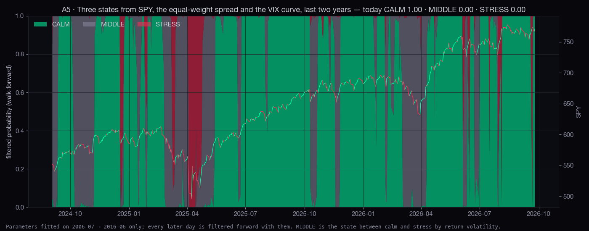
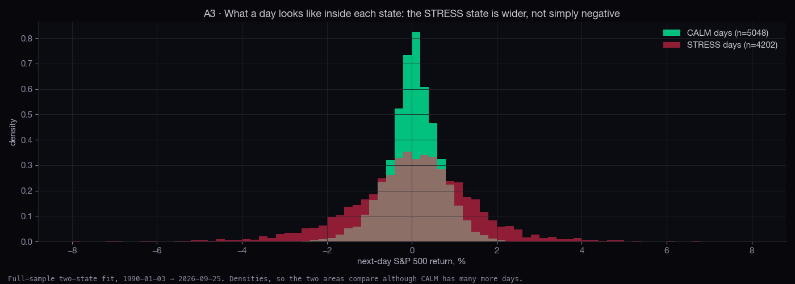
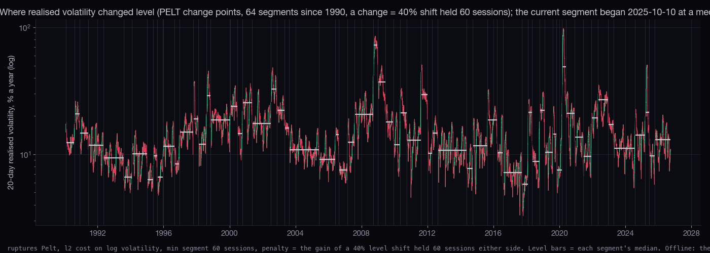
S&P 500 return + VIX level, two states, fitted 1990–2007, filtered forward 2008 → 2026-09-25. "Next 20" is the return over the 20 sessions after the day, so an open month at the end is left out.
| state | share of days | episodes | length: median · 90th (days) | next day, mean | next 20: median | next 20: 10th pct | next 20: share up | next 20: realised vol | last began |
|---|---|---|---|---|---|---|---|---|---|
| CALM | 52.6% | 58 | 22 · 104 | +0.043% | +1.13% | -3.38% | 65.2% | 10.6% | 2026-08-05 |
| STRESS | 47.4% | 58 | 12 · 83 | +0.027% | +2.08% | -6.47% | 66.2% | 18.1% | 2026-08-04 |
Three states, same data:
| state | share of days | episodes | length: median · 90th (days) | next day, mean | next 20: median | next 20: 10th pct | next 20: share up | next 20: realised vol | last began |
|---|---|---|---|---|---|---|---|---|---|
| CALM | 27.4% | 47 | 21 · 64 | +0.068% | +0.99% | -3.34% | 64.1% | 9.6% | 2025-12-24 |
| MIDDLE | 40.2% | 83 | 14 · 50 | +0.055% | +1.44% | -4.75% | 65.4% | 12.2% | 2026-04-13 |
| STRESS | 32.4% | 37 | 14 · 105 | -0.017% | +2.34% | -6.35% | 67.4% | 20.4% | 2026-03-05 |
SPY + equal-weight spread + VIX curve (2006 →), fitted to mid-2016, filtered forward after; two states:
| state | share of days | episodes | length: median · 90th (days) | next day, mean | next 20: median | next 20: 10th pct | next 20: share up | next 20: realised vol | last began |
|---|---|---|---|---|---|---|---|---|---|
| CALM | 81.2% | 115 | 6 · 44 | +0.075% | +1.50% | -4.11% | 66.8% | 11.2% | 2026-09-22 |
| STRESS | 18.8% | 114 | 2 · 11 | -0.055% | +2.86% | -5.05% | 72.9% | 19.9% | 2026-09-21 |
S&P 500 returns only since 1928, fitted to 1976, filtered forward after:
| state | share of days | episodes | length: median · 90th (days) | next day, mean | next 20: median | next 20: 10th pct | next 20: share up | next 20: realised vol | last began |
|---|---|---|---|---|---|---|---|---|---|
| CALM | 82.3% | 353 | 4 · 87 | +0.052% | +1.07% | -4.00% | 62.3% | 11.7% | 2026-06-24 |
| STRESS | 17.7% | 352 | 3 · 13 | -0.050% | +1.88% | -6.59% | 63.2% | 21.0% | 2026-06-23 |
Two-state 1990 → transition matrix (row = today's state, column = tomorrow's): [[0.9893, 0.0107], [0.0134, 0.9866]]. Three-state: [[0.9801, 0.0195, 0.0004], [0.0167, 0.9694, 0.0138], [0.0, 0.0177, 0.9823]]. 2006 → three-state: [[0.9636, 0.0307, 0.0057], [0.0477, 0.9284, 0.0238], [0.0, 0.1419, 0.8581]]. 1928 → two-state: [[0.9885, 0.0115], [0.0446, 0.9554]].
Whole-record fit, two states 1990 →:
| state | share of days | episodes | length: median · 90th (days) | next day, mean | next 20: median | next 20: 10th pct | next 20: share up | next 20: realised vol | last began |
|---|---|---|---|---|---|---|---|---|---|
| CALM | 54.6% | 85 | 26 · 129 | +0.047% | +1.03% | -3.21% | 64.6% | 10.2% | 2026-07-31 |
| STRESS | 45.4% | 85 | 9 · 151 | +0.017% | +1.64% | -6.31% | 62.3% | 18.1% | 2026-07-30 |
The question. The sector-rotation study measured relative strength over fixed windows (16, 72 and 646 sessions) and found that a sector's rank tells you almost nothing about its next rank at a quarter's range. This study lets a change-point search (PELT, the standard offline method in ruptures) decide where each sector's pace against SPY changed, with no window chosen by hand, and then asks the only question that matters for trading: when the search has just found a new stretch, does the new pace carry on? The second half puts Alan's 20 cohorts on a relative rotation graph, the JdK picture every sector desk uses, under the public approximation of its formula.
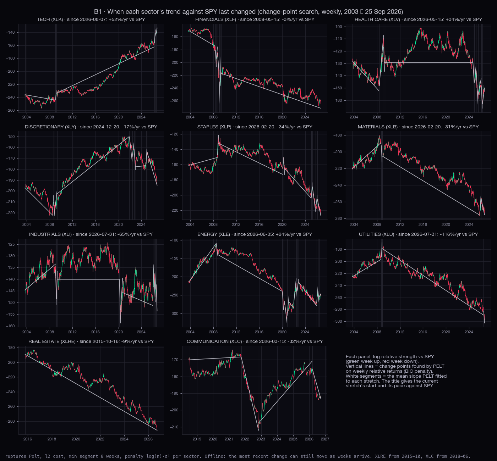
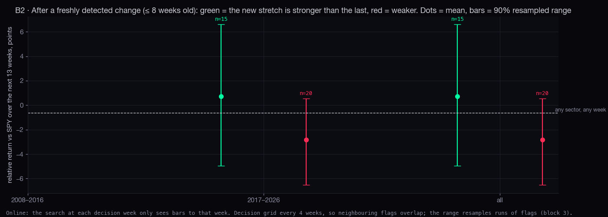
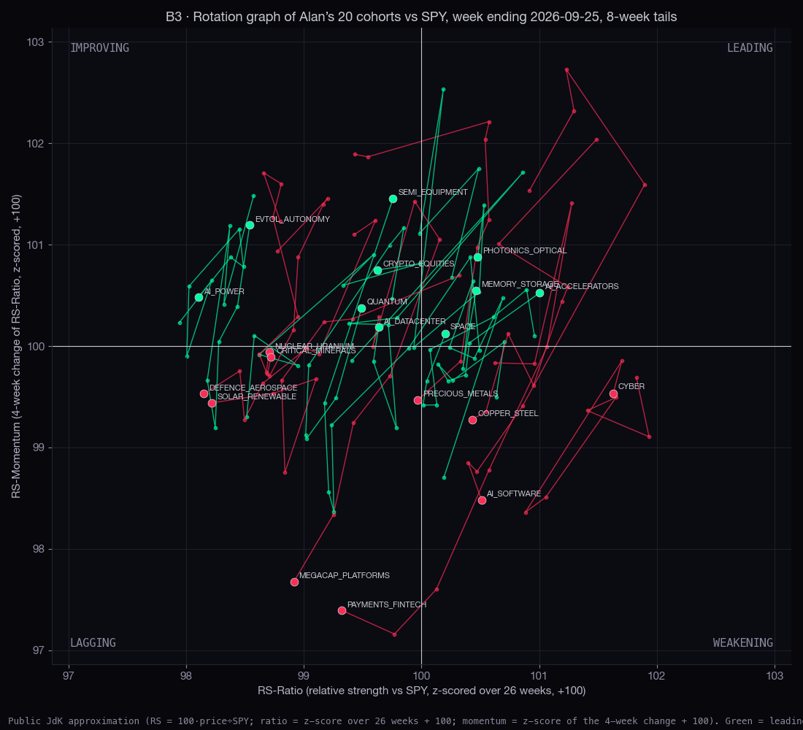
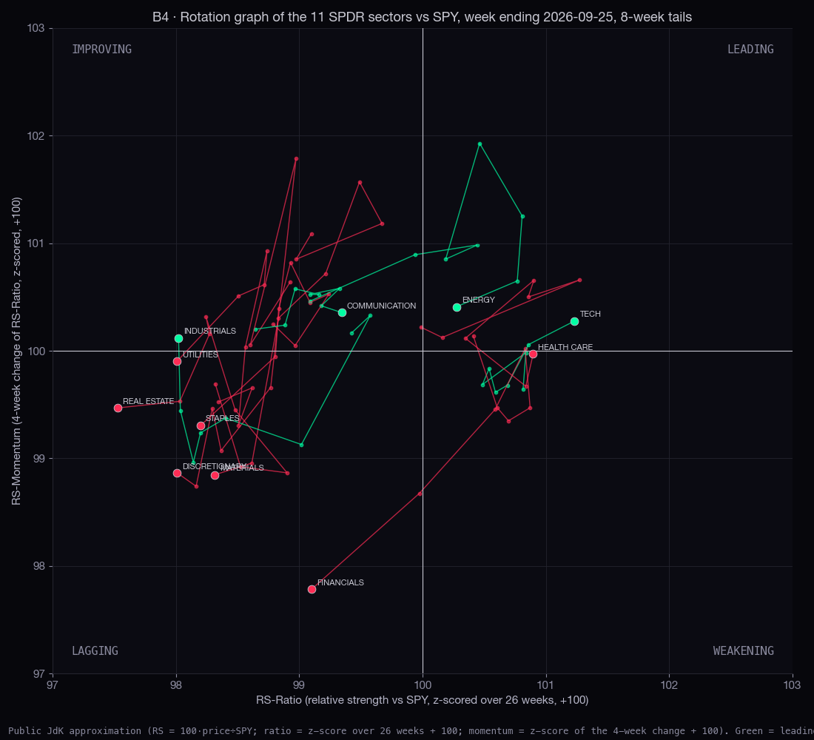
| sector | fund | current stretch since | weeks | pace vs SPY, % a year | previous stretch | changes found (penalty log(n)·σ²) | current stretch at double penalty | changes at double penalty |
|---|---|---|---|---|---|---|---|---|
| TECH | XLK | 2026-08-07 | 8 | +52% | -42% (from 2026-06-05) | 5 | 2026-06-05 | 2 |
| HEALTH CARE | XLV | 2026-05-15 | 20 | +34% | -95% (from 2026-03-06) | 9 | 2003-09-19 | 0 |
| ENERGY | XLE | 2026-06-05 | 17 | +24% | -163% (from 2026-04-03) | 14 | 2020-03-27 | 2 |
| FINANCIALS | XLF | 2009-05-15 | 907 | -3% | +258% (from 2009-03-13) | 6 | 2009-05-15 | 3 |
| REAL ESTATE | XLRE | 2015-10-16 | 572 | -9% | — | 0 | 2015-10-16 | 0 |
| DISCRETIONARY | XLY | 2024-12-20 | 93 | -17% | +86% (from 2024-10-25) | 10 | 2003-09-19 | 0 |
| MATERIALS | XLB | 2026-02-20 | 32 | -31% | +102% (from 2025-12-12) | 4 | 2003-09-19 | 0 |
| COMMUNICATION | XLC | 2026-03-13 | 29 | -32% | +11% (from 2022-11-11) | 3 | 2018-06-29 | 0 |
| STAPLES | XLP | 2026-02-20 | 32 | -34% | +56% (from 2025-11-07) | 9 | 2008-11-28 | 2 |
| INDUSTRIALS | XLI | 2026-07-31 | 9 | -65% | +50% (from 2026-06-05) | 10 | 2003-09-19 | 0 |
| UTILITIES | XLU | 2026-07-31 | 9 | -116% | -6% (from 2008-11-28) | 3 | 2003-09-19 | 0 |
| cohort | id | quadrant (26-week window) | RS-Ratio | RS-Momentum | weeks in quadrant | quadrant at 14 · 26 · 52 weeks | 13-week return vs SPY |
|---|---|---|---|---|---|---|---|
| Cyber security | CYBER | WEAKENING | 101.63 | 99.54 | 10 | LEADING · WEAKENING · LEADING ✗ | +26.0% |
| AI accelerators and the racks they sit in | AI_ACCELERATORS | LEADING | 101.00 | 100.52 | 2 | LEADING · LEADING · LEADING ✓ | -0.2% |
| AI software and data platforms | AI_SOFTWARE | WEAKENING | 100.51 | 98.48 | 4 | WEAKENING · WEAKENING · LAGGING ✗ | +5.6% |
| Photonics and optical networking | PHOTONICS_OPTICAL | LEADING | 100.48 | 100.88 | 3 | LEADING · LEADING · LEADING ✓ | +8.6% |
| Memory and storage | MEMORY_STORAGE | LEADING | 100.46 | 100.55 | 2 | LEADING · LEADING · LEADING ✓ | -16.4% |
| Copper, steel and industrial metals | COPPER_STEEL | WEAKENING | 100.43 | 99.28 | 2 | WEAKENING · WEAKENING · WEAKENING ✓ | +2.2% |
| Space | SPACE | LEADING | 100.20 | 100.13 | 1 | IMPROVING · LEADING · LEADING ✗ | -14.0% |
| Gold and silver miners | PRECIOUS_METALS | LAGGING | 99.97 | 99.47 | 1 | WEAKENING · LAGGING · LAGGING ✗ | +11.1% |
| Semiconductor equipment and materials | SEMI_EQUIPMENT | IMPROVING | 99.76 | 101.46 | 1 | IMPROVING · IMPROVING · LEADING ✗ | -18.3% |
| AI data centres and neoclouds | AI_DATACENTER | IMPROVING | 99.64 | 100.18 | 1 | LEADING · IMPROVING · LEADING ✗ | -11.0% |
| Crypto exchanges, treasuries and miners | CRYPTO_EQUITIES | IMPROVING | 99.63 | 100.75 | 4 | LEADING · IMPROVING · IMPROVING ✗ | -9.6% |
| Quantum computing | QUANTUM | IMPROVING | 99.49 | 100.37 | 1 | LEADING · IMPROVING · IMPROVING ✗ | -17.4% |
| Payments and fintech | PAYMENTS_FINTECH | LAGGING | 99.32 | 97.39 | 2 | LAGGING · LAGGING · LAGGING ✓ | -7.0% |
| The mega-cap platforms | MEGACAP_PLATFORMS | LAGGING | 98.92 | 97.68 | 4 | LAGGING · LAGGING · LAGGING ✓ | -1.5% |
| Rare earths and critical minerals | CRITICAL_MINERALS | LAGGING | 98.72 | 99.89 | 3 | LAGGING · LAGGING · LAGGING ✓ | -29.6% |
| Nuclear and uranium | NUCLEAR_URANIUM | LAGGING | 98.71 | 99.94 | 3 | LAGGING · LAGGING · IMPROVING ✗ | -26.5% |
| eVTOL, autonomy and new mobility | EVTOL_AUTONOMY | IMPROVING | 98.54 | 101.19 | 3 | IMPROVING · IMPROVING · IMPROVING ✓ | -34.9% |
| Solar and renewables | SOLAR_RENEWABLE | LAGGING | 98.22 | 99.44 | 5 | LAGGING · LAGGING · LAGGING ✓ | -35.3% |
| Defence and aerospace | DEFENCE_AEROSPACE | LAGGING | 98.15 | 99.53 | 6 | IMPROVING · LAGGING · LAGGING ✗ | -13.0% |
| The power the machines need | AI_POWER | IMPROVING | 98.10 | 100.48 | 5 | IMPROVING · IMPROVING · IMPROVING ✓ | -21.2% |
| cohort | id | quadrant (26-week window) | RS-Ratio | RS-Momentum | weeks in quadrant | quadrant at 14 · 26 · 52 weeks | 13-week return vs SPY |
|---|---|---|---|---|---|---|---|
| TECH | XLK | LEADING | 101.23 | 100.28 | 2 | LEADING · LEADING · LEADING ✓ | +2.4% |
| HEALTH CARE | XLV | WEAKENING | 100.90 | 99.97 | 2 | WEAKENING · WEAKENING · WEAKENING ✓ | +0.6% |
| ENERGY | XLE | LEADING | 100.27 | 100.41 | 6 | WEAKENING · LEADING · WEAKENING ✗ | +8.5% |
| COMMUNICATION | XLC | IMPROVING | 99.35 | 100.35 | 19 | WEAKENING · IMPROVING · IMPROVING ✗ | +0.5% |
| FINANCIALS | XLF | LAGGING | 99.10 | 97.78 | 2 | LAGGING · LAGGING · LAGGING ✓ | -3.3% |
| MATERIALS | XLB | LAGGING | 98.31 | 98.85 | 2 | LAGGING · LAGGING · LAGGING ✓ | -9.2% |
| STAPLES | XLP | LAGGING | 98.20 | 99.31 | 2 | LAGGING · LAGGING · LAGGING ✓ | -8.8% |
| INDUSTRIALS | XLI | IMPROVING | 98.02 | 100.12 | 1 | IMPROVING · IMPROVING · LAGGING ✗ | -11.8% |
| DISCRETIONARY | XLY | LAGGING | 98.01 | 98.86 | 5 | LAGGING · LAGGING · LAGGING ✓ | -9.0% |
| UTILITIES | XLU | LAGGING | 98.01 | 99.90 | 1 | LAGGING · LAGGING · LAGGING ✓ | -21.3% |
| REAL ESTATE | XLRE | LAGGING | 97.53 | 99.47 | 2 | LAGGING · LAGGING · LAGGING ✓ | -14.1% |
The question. Our studies searched families of rules: 100 RSI percentile rungs, RSI zones on either side of the 200-day, bands of distance to the 200-day, VIX levels and the VIX curve, calendar months. Every family reports its best member. The Reality Check (White 2000) and its sharper form, the SPA test (Hansen 2005), ask one thing: if every rule were pure luck, how often would the best of them look this good? Sullivan, Timmermann and White asked it of 7,846 rules on the Dow in 1999 and found the best rule's 100-year record vanished after 1986. Here it is asked of 480 rules per instrument, on five instruments, with runs of days resampled (block 60).
A rule = be long the index for 5, 20 or 60 sessions after its condition holds at a close, flat otherwise. Its yardstick is being long the same share of days without any condition, the "any day" line. "Excess" is the rule's mean return over that yardstick, in points a year. Each family's best rule is shown with its own p-value (as if it were the only rule tried) beside its SPA p-value (the whole family's search counted), the StepM list of rules that survive at 10%, and a walk-forward: the rule the first half would have picked, and what it earned on the second.
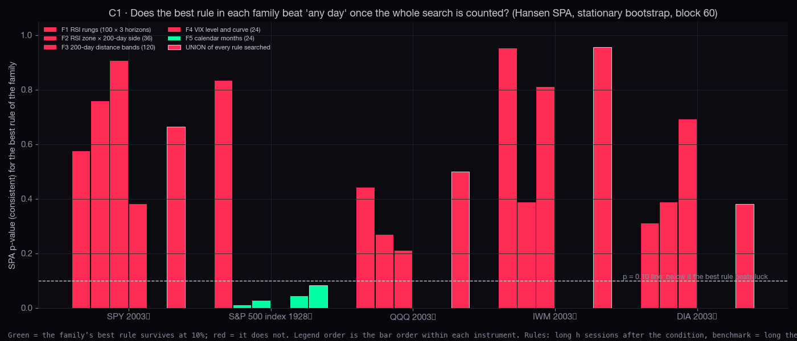
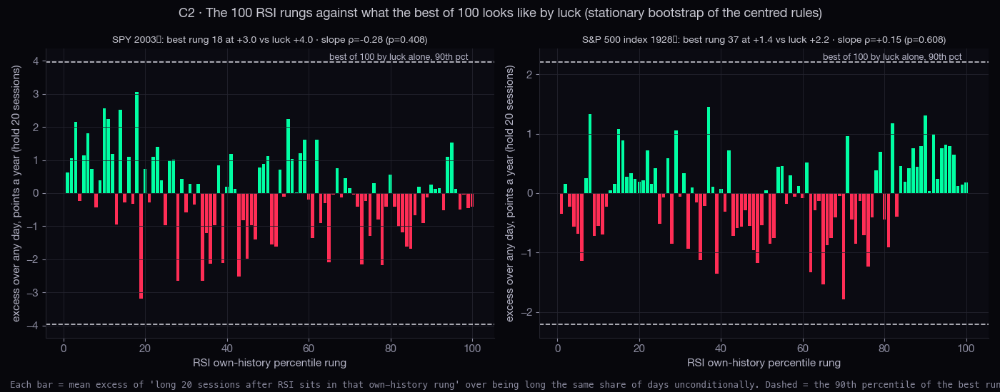
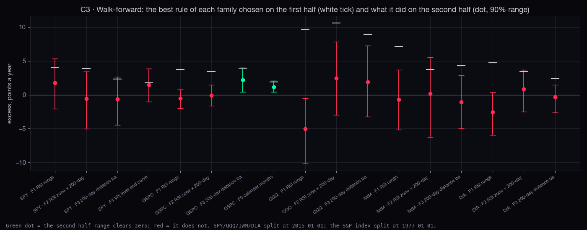
S&P 500 index 1928→ · 1927-12-30 → 2026-09-25
| family (rules) | best rule | best rule's excess, pts/yr | its own p (block bootstrap) | SPA p (search counted) | Reality Check p | StepM survivors at 10% | walk-forward: chosen on first half → second half (90% range) |
|---|---|---|---|---|---|---|---|
| F1 RSI rungs (100 × 3 horizons) | RSI pct rung 94 · hold 60 | +1.9 | 0.020 | 0.832 | 0.837 | none | RSI pct rung 96 · hold 60: +3.8 → -0.5 (-2.0 to +0.8) |
| F2 RSI zone × 200-day side (36) | RSI bottom 30% & above 200d · hold 20 | +3.0 | 0.000 | 0.009 | 0.009 | RSI bottom 20% & above 200d · hold 20, RSI bottom 30% & above 200d · hold 20, RSI bottom 20% & above 200d · hold 60 | RSI top 5% & above 200d · hold 60: +3.5 → -0.1 (-1.6 to +1.4) |
| F3 200-day distance bands (120) | > 5% above 200d · hold 60 | +3.0 | 0.000 | 0.026 | 0.026 | > 2% above 200d · hold 20, > 3% above 200d · hold 20, > 4% above 200d · hold 60, > 5% above 200d · hold 60, > 6% above 200d · hold 60, > 7% above 200d · hold 60 | > 5% above 200d · hold 60: +3.9 → +2.2 (+0.4 to +4.0) |
| F5 calendar months (24) | long except month 9 | +1.5 | 0.010 | 0.044 | 0.045 | long except month 9 | long except month 9: +1.9 → +1.2 (+0.4 to +2.1) |
| UNION · every rule searched (480) | > 5% above 200d · hold 60 | +3.0 | — | 0.083 | 0.083 | RSI bottom 30% & above 200d · hold 20, > 5% above 200d · hold 60 | — |
SPY 2003→ · 2003-09-11 → 2026-09-25
| family (rules) | best rule | best rule's excess, pts/yr | its own p (block bootstrap) | SPA p (search counted) | Reality Check p | StepM survivors at 10% | walk-forward: chosen on first half → second half (90% range) |
|---|---|---|---|---|---|---|---|
| F1 RSI rungs (100 × 3 horizons) | RSI pct rung 18 · hold 60 | +3.6 | 0.014 | 0.575 | 0.579 | none | RSI pct rung 67 · hold 60: +4.0 → +1.8 (-2.1 to +5.4) |
| F2 RSI zone × 200-day side (36) | RSI bottom 20% & above 200d · hold 5 | +1.8 | 0.202 | 0.757 | 0.757 | none | RSI bottom 30% & above 200d · hold 20: +3.8 → -0.6 (-5.0 to +3.4) |
| F3 200-day distance bands (120) | > 1% above 200d · hold 60 | +1.5 | 0.360 | 0.906 | 0.906 | none | > 2% above 200d · hold 20: +2.3 → -0.6 (-4.5 to +2.6) |
| F4 VIX level and curve (24) | VIX own pct ≥ 70 · hold 60 | +2.4 | 0.056 | 0.380 | 0.380 | none | VIX own pct ≥ 50 · hold 20: +1.8 → +1.4 (-1.0 to +3.9) |
| UNION · every rule searched (480) | RSI pct rung 18 · hold 60 | +3.6 | — | 0.664 | 0.668 | none | — |
QQQ 2003→ · 2003-09-11 → 2026-09-25
| family (rules) | best rule | best rule's excess, pts/yr | its own p (block bootstrap) | SPA p (search counted) | Reality Check p | StepM survivors at 10% | walk-forward: chosen on first half → second half (90% range) |
|---|---|---|---|---|---|---|---|
| F1 RSI rungs (100 × 3 horizons) | RSI pct rung 44 · hold 60 | +5.8 | 0.064 | 0.441 | 0.441 | none | RSI pct rung 74 · hold 60: +9.7 → -5.0 (-10.2 to -0.5) |
| F2 RSI zone × 200-day side (36) | RSI bottom 30% & below 200d · hold 60 | +4.9 | 0.146 | 0.269 | 0.269 | none | RSI bottom 30% & below 200d · hold 60: +10.6 → +2.4 (-3.0 to +7.8) |
| F3 200-day distance bands (120) | > 4% below 200d · hold 60 | +5.2 | 0.116 | 0.209 | 0.211 | none | > 1% below 200d · hold 60: +8.9 → +1.9 (-3.2 to +7.3) |
| UNION · every rule searched (456) | RSI pct rung 44 · hold 60 | +5.8 | — | 0.499 | 0.499 | none | — |
IWM 2003→ · 2003-09-11 → 2026-09-25
| family (rules) | best rule | best rule's excess, pts/yr | its own p (block bootstrap) | SPA p (search counted) | Reality Check p | StepM survivors at 10% | walk-forward: chosen on first half → second half (90% range) |
|---|---|---|---|---|---|---|---|
| F1 RSI rungs (100 × 3 horizons) | RSI pct rung 11 · hold 20 | +3.6 | 0.018 | 0.951 | 0.954 | none | RSI pct rung 1 · hold 60: +7.1 → -0.7 (-5.2 to +3.7) |
| F2 RSI zone × 200-day side (36) | RSI bottom 30% & above 200d · hold 5 | +3.7 | 0.070 | 0.387 | 0.387 | none | RSI bottom 20% & above 200d · hold 20: +3.8 → +0.2 (-6.2 to +5.6) |
| F3 200-day distance bands (120) | > 1% below 200d · hold 60 | +2.6 | 0.190 | 0.810 | 0.810 | none | > 2% below 200d · hold 60: +4.3 → -1.1 (-5.0 to +2.9) |
| UNION · every rule searched (456) | RSI bottom 30% & above 200d · hold 5 | +3.7 | — | 0.955 | 0.957 | none | — |
DIA 2003→ · 2003-09-11 → 2026-09-25
| family (rules) | best rule | best rule's excess, pts/yr | its own p (block bootstrap) | SPA p (search counted) | Reality Check p | StepM survivors at 10% | walk-forward: chosen on first half → second half (90% range) |
|---|---|---|---|---|---|---|---|
| F1 RSI rungs (100 × 3 horizons) | RSI pct rung 7 · hold 60 | +3.9 | 0.000 | 0.310 | 0.312 | none | RSI pct rung 68 · hold 60: +4.7 → -2.6 (-6.0 to +0.3) |
| F2 RSI zone × 200-day side (36) | RSI bottom 30% & above 200d · hold 5 | +2.7 | 0.020 | 0.387 | 0.387 | none | RSI bottom 5% & below 200d · hold 20: +3.5 → +0.8 (-2.5 to +3.7) |
| F3 200-day distance bands (120) | > 9% below 200d · hold 20 | +2.1 | 0.236 | 0.692 | 0.692 | none | > 1% above 200d · hold 60: +2.4 → -0.4 (-2.6 to +1.4) |
| UNION · every rule searched (453) | RSI pct rung 7 · hold 60 | +3.9 | — | 0.381 | 0.383 | none | — |
Plain words, one line each. "Tested here" means this page's Reality Check covered that family on the same data. The word at the end follows the method standard: luck-proof (clears the any-day line after the search is counted, in both halves), leaning (same direction, range still touches the line), a list (fewer than 20 episodes), and two words the standard implies but does not name: descriptive (a measurement, not a rule, so snooping does not apply) and looks like snooping (the best of many, with no correction, and it fades out of sample).
| published finding | what this page did with it | what the numbers say | word |
|---|---|---|---|
| RSI ladder / RSI full history: a low rung pays (rsi-ladder, rsi-full-history, S8) | Tested here: 100 rungs × 3 horizons, 5 instruments | No rung survives SPA anywhere (best p 0.31); the slope is a lean (SPY ρ -0.28, p 0.41) | LOOKS LIKE SNOOPING as a rung; the slope stays a lean |
| S8: SPY RSI bottom 10% while above the 200-day, up 74.8% of 103 episodes | Tested here: the RSI-zone × 200-day family | Survives SPA on the 1928 record (p 0.009) but not on SPY 2003 → (p 0.76); walk-forward picks another member and it fails | LEANING (the statistician's word, kept) |
| Bottoms / S9: deep below the 200-day is a problem | Tested here: 20 'below' bands × 3 horizons | 'Below' bands never beat any day and never survive; what survives is the mirror, 'above' (p 0.026, walk-forward holds on 1977 →) | SURVIVES AS A TREND FACT: above the 200-day pays; below is where the wildness is (study 1) |
| Market regime: September is the one negative month | Tested here: 24 month rules | 'Long except September' survives SPA on 1928 → (p 0.044) and the second half (+1.2, range +0.4 to +2.1) | LUCK-PROOF over the century; the last 30 years alone cannot show it |
| Bottoms: VIX at its 90th percentile, VIX above VIX3M, as buy conditions | Tested here: 7 VIX levels + the curve, SPY only | Best is VIX own pct ≥ 70 · hold 60 at +2.4 pts/yr, SPA p 0.38 | NOT SHOWN as a return rule; study 1 shows what the VIX state does predict: next month's wildness |
| Bottoms: the VIX turns with the low or just before it; put/call turns first | Not re-tested here (a timing description, not a rule) | The statistician's fix stands: shuffle the condition series in blocks as the control | DESCRIPTIVE |
| Sector rotation: the widest bow tie on record; ties narrowed every time | Not re-tested; study 2 adds a dated change-point view and this week's rotation graph | 10 episodes, and 'narrower after an extreme' is what extremes do | A LIST, as the page itself says |
| Sector rotation: short and medium rank persistence ≈ 0; long ≈ +0.18 | Not re-tested; consistent with study 2's finding that fresh changes carry little forward information | Measured with intervals on the page | SURVIVES AS A NEGATIVE (no forecasting value at a quarter) |
| Leaders: the top ten gave about two-thirds of each up year's gain since 2020 | Not a rule; an accounting fact from the N-PORT weights | Point-in-time weights, so no snooping; the pre-2020 figure is a floor | SURVIVES (descriptive) |
| Regime: equal weight at its weakest in 7 pairs; a low reading has not meant catch-up | Not re-tested; 3–9 episodes per pair | Too few to call either way | A LIST |
| Regime: Alan's high-yield-pullback thesis | Not re-tested; the regime page found no clear answer at one year | 18 and 6 separate years | A LIST |
| S7 / S7b: 178 + 254 entry rules before and between reports, best 64.3% and 10 rules passing both halves | Not re-tested here (per-trade series are not in the repo; the statistician's N6 needs the export) | 254 rules at 5% give ~13 false passes per half; 10 is what luck looks like | LOOKS LIKE SNOOPING until N6 runs |
| Stats tab: 64.8% of SPY declines went on to a new high; 25% of those 10% deep | Not a rule; a wait, best shown as a survival curve | The statistician's Kaplan–Meier fix applies | DESCRIPTIVE |
The short version. Two things are luck-proof on the century record, and both are public knowledge rather than Scintilla discoveries: being above the 200-day pays, and September costs. The RSI-dip-in-an-uptrend idea is real on 98 years and invisible on 23, so it stays "leaning". Every RSI rung, every 200-day depth band, every VIX level, taken as a buy rule on the funds since 2003, is the best of a few hundred coin flips. What our data does support with no doubt is the market-state fact from study 1: the stressed state predicts how wild the next month is, and that is a sizing fact, not a timing one.
data/; ten proposals; a verdict table over the findings published so far.data/study-a-regime.json from study_a_regime.py (hmmlearn GaussianHMM, forward filter written out in 12 lines so the probabilities never see the future; ruptures PELT). Study 2: data/study-b-rotation.json and data/study-b-flags.json from study_b_rotation.py. Study 3: data/study-c-spa.json from study_c_spa.py (arch SPA and StepM, stationary bootstrap, 1000 draws, block 60, seed 20260928). Inputs: the table below, every file with its hash, bar count and date range. All bars are the chart API's daily closes (split-adjusted, provider MASSIVE) or FMP index and VIX3M rows pulled on Fly by the regime lane, saved as served.| series | file | bars | from | to | sha256 (12) |
|---|---|---|---|---|---|
| AAPL | ~/Library/Application Support/scintilla/stats-cache/candles-f5/AAPL.json | 5797 | 2003-09-11 | 2026-09-25 | a860bc88e886 |
| ABNB | ~/Library/Application Support/scintilla/stats-cache/candles-f5/ABNB.json | 1454 | 2020-12-10 | 2026-09-25 | d8de2484593d |
| ADBE | ~/Library/Application Support/scintilla/stats-cache/candles-f5/ADBE.json | 5797 | 2003-09-11 | 2026-09-25 | 0f0f377046a7 |
| ADI | ~/Library/Application Support/scintilla/stats-cache/candles-f5/ADI.json | 5797 | 2003-09-11 | 2026-09-25 | 6db656c84634 |
| AEE | ~/Library/Application Support/scintilla/stats-cache/candles-f5/AEE.json | 5797 | 2003-09-11 | 2026-09-25 | 3c8a12883f75 |
| AEM | ~/Library/Application Support/scintilla/stats-cache/candles-f5/AEM.json | 5797 | 2003-09-11 | 2026-09-25 | d2c5b0a31f3a |
| AEP | ~/Library/Application Support/scintilla/stats-cache/candles-f5/AEP.json | 5797 | 2003-09-11 | 2026-09-25 | dff36e293081 |
| AFRM | ~/Library/Application Support/scintilla/stats-cache/candles-f5/AFRM.json | 1432 | 2021-01-13 | 2026-09-25 | 86028826a14d |
| ALAB | ~/Library/Application Support/scintilla/stats-cache/candles-f5/ALAB.json | 1752 | 2003-09-11 | 2026-09-25 | 22878c28baf4 |
| AMAT | ~/Library/Application Support/scintilla/stats-cache/candles-f5/AMAT.json | 5797 | 2003-09-11 | 2026-09-25 | 8478c55ce1f7 |
| AMD | ~/Library/Application Support/scintilla/stats-cache/candles-f5/AMD.json | 5797 | 2003-09-11 | 2026-09-25 | 355fe80f6389 |
| AMZN | ~/Library/Application Support/scintilla/stats-cache/candles-f5/AMZN.json | 5797 | 2003-09-11 | 2026-09-25 | 0f95834b91db |
| ANET | ~/Library/Application Support/scintilla/stats-cache/candles-f5/ANET.json | 3226 | 2007-04-30 | 2026-09-25 | bb37f6c13edd |
| APH | ~/Library/Application Support/scintilla/stats-cache/candles-f5/APH.json | 5797 | 2003-09-11 | 2026-09-25 | 55ad67b6b061 |
| APLD | ~/Library/Application Support/scintilla/stats-cache/candles-f5/APLD.json | 1188 | 2021-12-31 | 2026-09-25 | 4a08a748ae1f |
| APP | ~/Library/Application Support/scintilla/stats-cache/candles-f5/APP.json | 3763 | 2003-09-18 | 2026-09-25 | 605a22663ea0 |
| ARM | ~/Library/Application Support/scintilla/stats-cache/candles-f5/ARM.json | 2662 | 2003-09-11 | 2026-09-25 | dcd8dcb8d32f |
| ASML | ~/Library/Application Support/scintilla/stats-cache/candles-f5/ASML.json | 5777 | 2003-09-11 | 2026-09-25 | 31a5f3673de0 |
| ASTS | ~/Library/Application Support/scintilla/stats-cache/candles-f5/ASTS.json | 1375 | 2021-04-07 | 2026-09-25 | d5e26bc12e2c |
| ATO | ~/Library/Application Support/scintilla/stats-cache/candles-f5/ATO.json | 5797 | 2003-09-11 | 2026-09-25 | 93be9468a6ca |
| AU | ~/Library/Application Support/scintilla/stats-cache/candles-f5/AU.json | 5797 | 2003-09-11 | 2026-09-25 | 1084de85688b |
| AUR | ~/Library/Application Support/scintilla/stats-cache/candles-f5/AUR.json | 1227 | 2021-11-04 | 2026-09-25 | 73d5cb75d02c |
| AVGO | ~/Library/Application Support/scintilla/stats-cache/candles-f5/AVGO.json | 4311 | 2009-08-06 | 2026-09-25 | 7ab223e4f87b |
| AXP | ~/Library/Application Support/scintilla/stats-cache/candles-f5/AXP.json | 5797 | 2003-09-11 | 2026-09-25 | 7b1dcdfb4644 |
| AXTI | ~/Library/Application Support/scintilla/stats-cache/candles-f5/AXTI.json | 5797 | 2003-09-11 | 2026-09-25 | 11bd24e8fa1f |
| BA | ~/Library/Application Support/scintilla/stats-cache/candles-f5/BA.json | 5797 | 2003-09-11 | 2026-09-25 | c7f4f1810946 |
| BABA | ~/Library/Application Support/scintilla/stats-cache/candles-f5/BABA.json | 3022 | 2014-09-19 | 2026-09-25 | 727720eca106 |
| BE | ~/Library/Application Support/scintilla/stats-cache/candles-f5/BE.json | 3360 | 2003-09-11 | 2026-09-25 | 6a6c46470507 |
| BKNG | ~/Library/Application Support/scintilla/stats-cache/candles-f5/BKNG.json | 2157 | 2018-02-27 | 2026-09-25 | 8ae6ff1a54b4 |
| CCJ | ~/Library/Application Support/scintilla/stats-cache/candles-f5/CCJ.json | 5797 | 2003-09-11 | 2026-09-25 | 6f2e6c3c2fc1 |
| CDE | ~/Library/Application Support/scintilla/stats-cache/candles-f5/CDE.json | 5797 | 2003-09-11 | 2026-09-25 | ebdee4867210 |
| CDNS | ~/Library/Application Support/scintilla/stats-cache/candles-f5/CDNS.json | 5258 | 2005-10-31 | 2026-09-25 | 05f2904af516 |
| CEG | ~/Library/Application Support/scintilla/stats-cache/candles-f5/CEG.json | 3307 | 2003-09-11 | 2026-09-25 | d2e514ca63c8 |
| CIFR | ~/Library/Application Support/scintilla/stats-cache/candles-f5/CIFR.json | 1274 | 2021-08-30 | 2026-09-25 | 4a18003aa289 |
| COF | ~/Library/Application Support/scintilla/stats-cache/candles-f5/COF.json | 5797 | 2003-09-11 | 2026-09-25 | 30176bcc43d3 |
| COIN | ~/Library/Application Support/scintilla/stats-cache/candles-f5/COIN.json | 2440 | 2007-03-16 | 2026-09-25 | 465138912d98 |
| CORZ | ~/Library/Application Support/scintilla/stats-cache/candles-f5/CORZ.json | 910 | 2022-01-20 | 2026-09-25 | ed23eb791db4 |
| CRDO | ~/Library/Application Support/scintilla/stats-cache/candles-f5/CRDO.json | 1170 | 2022-01-27 | 2026-09-25 | 6f6f90dca969 |
| CRM | ~/Library/Application Support/scintilla/stats-cache/candles-f5/CRM.json | 5601 | 2004-06-23 | 2026-09-25 | be81f81aff0c |
| CRWD | ~/Library/Application Support/scintilla/stats-cache/candles-f5/CRWD.json | 1833 | 2019-06-12 | 2026-09-25 | 7d074b192292 |
| CRWV | ~/Library/Application Support/scintilla/stats-cache/candles-f5/CRWV.json | 376 | 2025-03-28 | 2026-09-25 | c50a600c3214 |
| D | ~/Library/Application Support/scintilla/stats-cache/candles-f5/D.json | 5797 | 2003-09-11 | 2026-09-25 | 06c220097eb4 |
| DASH | ~/Library/Application Support/scintilla/stats-cache/candles-f5/DASH.json | 1455 | 2020-12-09 | 2026-09-25 | 231b21aad53c |
| DDOG | ~/Library/Application Support/scintilla/stats-cache/candles-f5/DDOG.json | 1764 | 2019-09-19 | 2026-09-25 | eaf4179ac3db |
| DELL | ~/Library/Application Support/scintilla/stats-cache/candles-f5/DELL.json | 4498 | 2003-09-11 | 2026-09-25 | 3337d3230eda |
| DIA | ~/Library/Application Support/scintilla/stats-cache/daily-bars-rsi/DIA.json | 5797 | 2003-09-11 | 2026-09-25 | 1d8a234e5743 |
| DLR | ~/Library/Application Support/scintilla/stats-cache/candles-f5/DLR.json | 5511 | 2004-10-29 | 2026-09-25 | 3e2b5ddb4480 |
| DTE | ~/Library/Application Support/scintilla/stats-cache/candles-f5/DTE.json | 5797 | 2003-09-11 | 2026-09-25 | ebb9474b5361 |
| DUK | ~/Library/Application Support/scintilla/stats-cache/candles-f5/DUK.json | 5797 | 2003-09-11 | 2026-09-25 | 1226fcbb275b |
| ED | ~/Library/Application Support/scintilla/stats-cache/candles-f5/ED.json | 5797 | 2003-09-11 | 2026-09-25 | 7ca221abf6ee |
| EH | ~/Library/Application Support/scintilla/stats-cache/candles-f5/EH.json | 1701 | 2019-12-12 | 2026-09-25 | cc80d7e0f033 |
| EOSE | ~/Library/Application Support/scintilla/stats-cache/candles-f5/EOSE.json | 1470 | 2020-11-17 | 2026-09-25 | daf573e561ef |
| EQIX | ~/Library/Application Support/scintilla/stats-cache/candles-f5/EQIX.json | 5797 | 2003-09-11 | 2026-09-25 | aeeca61ac7cf |
| ES | ~/Library/Application Support/scintilla/stats-cache/candles-f5/ES.json | 4308 | 2007-11-15 | 2026-09-25 | dfc6874e666a |
| ETN | ~/Library/Application Support/scintilla/stats-cache/candles-f5/ETN.json | 5797 | 2003-09-11 | 2026-09-25 | ca3d04b845a7 |
| ETR | ~/Library/Application Support/scintilla/stats-cache/candles-f5/ETR.json | 5797 | 2003-09-11 | 2026-09-25 | 64cb28181bb2 |
| EVTL | ~/Library/Application Support/scintilla/stats-cache/candles-f5/EVTL.json | 1198 | 2021-12-16 | 2026-09-25 | 217124842ff6 |
| EXC | ~/Library/Application Support/scintilla/stats-cache/candles-f5/EXC.json | 5797 | 2003-09-11 | 2026-09-25 | db387eec1819 |
| FCX | ~/Library/Application Support/scintilla/stats-cache/candles-f5/FCX.json | 5797 | 2003-09-11 | 2026-09-25 | 05e750260478 |
| FNV | ~/Library/Application Support/scintilla/stats-cache/candles-f5/FNV.json | 3784 | 2011-09-08 | 2026-09-25 | 6b0e5667beea |
| FSLR | ~/Library/Application Support/scintilla/stats-cache/candles-f5/FSLR.json | 4993 | 2006-11-17 | 2026-09-25 | ad83e086a92d |
| GD | ~/Library/Application Support/scintilla/stats-cache/candles-f5/GD.json | 5797 | 2003-09-11 | 2026-09-25 | 7b99c578cade |
| GEV | ~/Library/Application Support/scintilla/stats-cache/candles-f5/GEV.json | 624 | 2024-04-02 | 2026-09-25 | aaf1fe55f747 |
| GOOG | ~/Library/Application Support/scintilla/stats-cache/candles-f5/GOOG.json | 5561 | 2004-08-19 | 2026-09-25 | 2c495bc9d944 |
| GOOGL | ~/Library/Application Support/scintilla/stats-cache/candles-f5/GOOGL.json | 3139 | 2014-04-03 | 2026-09-25 | a3d319fe0a02 |
| HL | ~/Library/Application Support/scintilla/stats-cache/candles-f5/HL.json | 5797 | 2003-09-11 | 2026-09-25 | 9ac92d637fa2 |
| HOOD | ~/Library/Application Support/scintilla/stats-cache/candles-f5/HOOD.json | 1296 | 2021-07-29 | 2026-09-25 | 9da0a36eddc4 |
| HWM | ~/Library/Application Support/scintilla/stats-cache/candles-f5/HWM.json | 1630 | 2020-04-01 | 2026-09-25 | 09cbad306119 |
| IBM | ~/Library/Application Support/scintilla/stats-cache/candles-f5/IBM.json | 5797 | 2003-09-11 | 2026-09-25 | d5ef5944901c |
| INTC | ~/Library/Application Support/scintilla/stats-cache/candles-f5/INTC.json | 5797 | 2003-09-11 | 2026-09-25 | 2e535ee466e6 |
| INTU | ~/Library/Application Support/scintilla/stats-cache/candles-f5/INTU.json | 5797 | 2003-09-11 | 2026-09-25 | 10c2b8435c3b |
| IONQ | ~/Library/Application Support/scintilla/stats-cache/candles-f5/IONQ.json | 1251 | 2021-10-01 | 2026-09-25 | 244143bc5ab7 |
| IREN | ~/Library/Application Support/scintilla/stats-cache/candles-f5/IREN.json | 1218 | 2021-11-17 | 2026-09-25 | 9ce8484bcc21 |
| IWM | ~/Library/Application Support/scintilla/stats-cache/daily-bars-rsi/IWM.json | 5797 | 2003-09-11 | 2026-09-25 | 56b7c405b630 |
| JOBY | ~/Library/Application Support/scintilla/stats-cache/candles-f5/JOBY.json | 1287 | 2021-08-11 | 2026-09-25 | 9f68de0a02aa |
| KGC | ~/Library/Application Support/scintilla/stats-cache/candles-f5/KGC.json | 5797 | 2003-09-11 | 2026-09-25 | e08b7a77f692 |
| KLAC | ~/Library/Application Support/scintilla/stats-cache/candles-f5/KLAC.json | 5797 | 2003-09-11 | 2026-09-25 | 3a0d34001542 |
| LAC | ~/Library/Application Support/scintilla/stats-cache/candles-f5/LAC.json | 2179 | 2018-01-25 | 2026-09-25 | 03a580a0fffe |
| LCID | ~/Library/Application Support/scintilla/stats-cache/candles-f5/LCID.json | 1299 | 2021-07-26 | 2026-09-25 | 463b1f59ba37 |
| LHX | ~/Library/Application Support/scintilla/stats-cache/candles-f5/LHX.json | 1820 | 2019-07-01 | 2026-09-25 | 9cb1dc3777ce |
| LI | ~/Library/Application Support/scintilla/stats-cache/candles-f5/LI.json | 2463 | 2004-02-10 | 2026-09-25 | 3b76b7815f8c |
| LITE | ~/Library/Application Support/scintilla/stats-cache/candles-f5/LITE.json | 2810 | 2003-09-11 | 2026-09-25 | 52b078a349df |
| LMT | ~/Library/Application Support/scintilla/stats-cache/candles-f5/LMT.json | 5797 | 2003-09-11 | 2026-09-25 | 5140649eca49 |
| LRCX | ~/Library/Application Support/scintilla/stats-cache/candles-f5/LRCX.json | 5797 | 2003-09-11 | 2026-09-25 | ec8b750b6b0a |
| LYFT | ~/Library/Application Support/scintilla/stats-cache/candles-f5/LYFT.json | 1884 | 2019-03-29 | 2026-09-25 | acd288052d90 |
| MA | ~/Library/Application Support/scintilla/stats-cache/candles-f5/MA.json | 5116 | 2006-05-25 | 2026-09-25 | 88e56d727ebd |
| MDB | ~/Library/Application Support/scintilla/stats-cache/candles-f5/MDB.json | 2245 | 2017-10-19 | 2026-09-25 | 249cd923c476 |
| MELI | ~/Library/Application Support/scintilla/stats-cache/candles-f5/MELI.json | 4812 | 2007-08-10 | 2026-09-25 | 4adc9e9bfa13 |
| META | ~/Library/Application Support/scintilla/stats-cache/candles-f5/META.json | 1226 | 2021-06-30 | 2026-09-25 | 577a90e16142 |
| MP | ~/Library/Application Support/scintilla/stats-cache/candles-f5/MP.json | 1469 | 2020-11-18 | 2026-09-25 | 132c3e5684f3 |
| MRVL | ~/Library/Application Support/scintilla/stats-cache/candles-f5/MRVL.json | 5797 | 2003-09-11 | 2026-09-25 | 4dadd712fdbd |
| MSFT | ~/Library/Application Support/scintilla/stats-cache/candles-f5/MSFT.json | 5797 | 2003-09-11 | 2026-09-25 | 48273b8881bd |
| MSTR | ~/Library/Application Support/scintilla/stats-cache/candles-f5/MSTR.json | 5797 | 2003-09-11 | 2026-09-25 | 2b6e804f0aa7 |
| MU | ~/Library/Application Support/scintilla/stats-cache/candles-f5/MU.json | 5797 | 2003-09-11 | 2026-09-25 | 0990e6fcd7c5 |
| NBIS | ~/Library/Application Support/scintilla/stats-cache/candles-f5/NBIS.json | 484 | 2024-10-21 | 2026-09-25 | 50b3bd31ee12 |
| NEE | ~/Library/Application Support/scintilla/stats-cache/candles-f5/NEE.json | 4090 | 2010-06-23 | 2026-09-25 | f2f58ba2da73 |
| NEM | ~/Library/Application Support/scintilla/stats-cache/candles-f5/NEM.json | 5797 | 2003-09-11 | 2026-09-25 | 8736c1080c66 |
| NFLX | ~/Library/Application Support/scintilla/stats-cache/candles-f5/NFLX.json | 5797 | 2003-09-11 | 2026-09-25 | e4f360aef451 |
| NIO | ~/Library/Application Support/scintilla/stats-cache/candles-f5/NIO.json | 5186 | 2003-09-11 | 2026-09-25 | cfb2e99de652 |
| NOC | ~/Library/Application Support/scintilla/stats-cache/candles-f5/NOC.json | 5797 | 2003-09-11 | 2026-09-25 | ac0daf7325a2 |
| NOW | ~/Library/Application Support/scintilla/stats-cache/candles-f5/NOW.json | 4281 | 2005-09-26 | 2026-09-25 | 995be467a0ae |
| NUE | ~/Library/Application Support/scintilla/stats-cache/candles-f5/NUE.json | 5797 | 2003-09-11 | 2026-09-25 | 3dae82035e4a |
| NVDA | ~/Library/Application Support/scintilla/stats-cache/candles-f5/NVDA.json | 5797 | 2003-09-11 | 2026-09-25 | 00bfc839025f |
| OKLO | ~/Library/Application Support/scintilla/stats-cache/candles-f5/OKLO.json | 596 | 2024-05-10 | 2026-09-25 | e96b92750e90 |
| ONDS | ~/Library/Application Support/scintilla/stats-cache/candles-f5/ONDS.json | 1458 | 2020-12-04 | 2026-09-25 | 4161cc44d3fd |
| ORCL | ~/Library/Application Support/scintilla/stats-cache/candles-f5/ORCL.json | 5797 | 2003-09-11 | 2026-09-25 | dd1ebc37267e |
| PAAS | ~/Library/Application Support/scintilla/stats-cache/candles-f5/PAAS.json | 5797 | 2003-09-11 | 2026-09-25 | 5c3799e62d7e |
| PANW | ~/Library/Application Support/scintilla/stats-cache/candles-f5/PANW.json | 3566 | 2012-07-20 | 2026-09-25 | 0deef11ca2dc |
| PATH | ~/Library/Application Support/scintilla/stats-cache/candles-f5/PATH.json | 2257 | 2010-08-06 | 2026-09-25 | e6be7674b447 |
| PCG | ~/Library/Application Support/scintilla/stats-cache/candles-f5/PCG.json | 5797 | 2003-09-11 | 2026-09-25 | 1efb185df931 |
| PDD | ~/Library/Application Support/scintilla/stats-cache/candles-f5/PDD.json | 2560 | 2005-02-24 | 2026-09-25 | 5b8b40470d73 |
| PEG | ~/Library/Application Support/scintilla/stats-cache/candles-f5/PEG.json | 5797 | 2003-09-11 | 2026-09-25 | 7152b4e93ab2 |
| PLTR | ~/Library/Application Support/scintilla/stats-cache/candles-f5/PLTR.json | 1504 | 2020-09-30 | 2026-09-25 | 728544359ecc |
| PWR | ~/Library/Application Support/scintilla/stats-cache/candles-f5/PWR.json | 5797 | 2003-09-11 | 2026-09-25 | 08c1d3ebc646 |
| QBTS | ~/Library/Application Support/scintilla/stats-cache/candles-f5/QBTS.json | 1038 | 2022-08-08 | 2026-09-25 | 974dd542c843 |
| QCOM | ~/Library/Application Support/scintilla/stats-cache/candles-f5/QCOM.json | 5797 | 2003-09-11 | 2026-09-25 | d7f75f55ee17 |
| QQQ | ~/Library/Application Support/scintilla/stats-cache/daily-bars-rsi/QQQ.json | 4209 | 2003-09-11 | 2026-09-25 | 73b6aba4b990 |
| QS | ~/Library/Application Support/scintilla/stats-cache/candles-f5/QS.json | 1463 | 2020-11-27 | 2026-09-25 | bb7e11738e42 |
| QUBT | ~/Library/Application Support/scintilla/stats-cache/candles-f5/QUBT.json | 1306 | 2021-07-15 | 2026-09-25 | 90e65bea997e |
| RBLX | ~/Library/Application Support/scintilla/stats-cache/candles-f5/RBLX.json | 1394 | 2021-03-10 | 2026-09-25 | e1798a14ecfb |
| RGLD | ~/Library/Application Support/scintilla/stats-cache/candles-f5/RGLD.json | 5797 | 2003-09-11 | 2026-09-25 | a490008dd01a |
| RGTI | ~/Library/Application Support/scintilla/stats-cache/candles-f5/RGTI.json | 1147 | 2022-03-02 | 2026-09-25 | 0046343fc242 |
| RKLB | ~/Library/Application Support/scintilla/stats-cache/candles-f5/RKLB.json | 1277 | 2021-08-25 | 2026-09-25 | 7bf76b39812d |
| RSP | ~/Library/Application Support/scintilla/stats-cache/sector-rotation-20260928/RSP.json | 5797 | 2003-09-11 | 2026-09-25 | 8dbf967a82c0 |
| RTX | ~/Library/Application Support/scintilla/stats-cache/candles-f5/RTX.json | 1902 | 2007-08-08 | 2026-09-25 | 447bdd4b9764 |
| SCCO | ~/Library/Application Support/scintilla/stats-cache/candles-f5/SCCO.json | 4178 | 2010-02-17 | 2026-09-25 | d335a6cf81e3 |
| SHOP | ~/Library/Application Support/scintilla/stats-cache/candles-f5/SHOP.json | 3067 | 2004-10-26 | 2026-09-25 | f535ebef72f7 |
| SIMO | ~/Library/Application Support/scintilla/stats-cache/candles-f5/SIMO.json | 5343 | 2005-06-30 | 2026-09-25 | bc75237c9b5b |
| SMCI | ~/Library/Application Support/scintilla/stats-cache/candles-f5/SMCI.json | 4556 | 2007-03-29 | 2026-09-25 | df1829dbf7ba |
| SMR | ~/Library/Application Support/scintilla/stats-cache/candles-f5/SMR.json | 1104 | 2022-05-03 | 2026-09-25 | e0c46480b7a1 |
| SNDK | ~/Library/Application Support/scintilla/stats-cache/candles-f5/SNDK.json | 3589 | 2003-09-11 | 2026-09-25 | a0e5342cdbb0 |
| SNOW | ~/Library/Application Support/scintilla/stats-cache/candles-f5/SNOW.json | 2395 | 2014-01-31 | 2026-09-25 | 12cfe5e104fc |
| SNPS | ~/Library/Application Support/scintilla/stats-cache/candles-f5/SNPS.json | 5797 | 2003-09-11 | 2026-09-25 | b6eafff3c91a |
| SO | ~/Library/Application Support/scintilla/stats-cache/candles-f5/SO.json | 5797 | 2003-09-11 | 2026-09-25 | 398ad384a951 |
| SOFI | ~/Library/Application Support/scintilla/stats-cache/candles-f5/SOFI.json | 1337 | 2021-06-01 | 2026-09-25 | 6d651655d315 |
| SPCX | ~/Library/Application Support/scintilla/stats-cache/candles-f5/SPCX.json | 1402 | 2020-12-16 | 2026-09-25 | 37e9ed03b986 |
| SPOT | ~/Library/Application Support/scintilla/stats-cache/candles-f5/SPOT.json | 2369 | 2003-09-11 | 2026-09-25 | 88ce51fbc77c |
| SPY | ~/Library/Application Support/scintilla/stats-cache/daily-bars-rsi/SPY.json | 5797 | 2003-09-11 | 2026-09-25 | 0b05fe36c6d8 |
| SRE | ~/Library/Application Support/scintilla/stats-cache/candles-f5/SRE.json | 5797 | 2003-09-11 | 2026-09-25 | 046e69ff7e97 |
| STLD | ~/Library/Application Support/scintilla/stats-cache/candles-f5/STLD.json | 5797 | 2003-09-11 | 2026-09-25 | 4faed2ca81b9 |
| STX | ~/Library/Application Support/scintilla/stats-cache/candles-f5/STX.json | 5797 | 2003-09-11 | 2026-09-25 | 7a1c6cb7df1e |
| TDG | ~/Library/Application Support/scintilla/stats-cache/candles-f5/TDG.json | 5166 | 2006-03-15 | 2026-09-25 | 987a20b9aa63 |
| TEL | ~/Library/Application Support/scintilla/stats-cache/candles-f5/TEL.json | 4840 | 2007-07-02 | 2026-09-25 | 39701aeab4c8 |
| TSLA | ~/Library/Application Support/scintilla/stats-cache/candles-f5/TSLA.json | 4086 | 2010-06-29 | 2026-09-25 | 1ead31a0521f |
| TSM | ~/Library/Application Support/scintilla/stats-cache/candles-f5/TSM.json | 5797 | 2003-09-11 | 2026-09-25 | 493eeffb8a6b |
| TTWO | ~/Library/Application Support/scintilla/stats-cache/candles-f5/TTWO.json | 5797 | 2003-09-11 | 2026-09-25 | cad7501646cb |
| TXN | ~/Library/Application Support/scintilla/stats-cache/candles-f5/TXN.json | 5797 | 2003-09-11 | 2026-09-25 | 2581682fe3e0 |
| UBER | ~/Library/Application Support/scintilla/stats-cache/candles-f5/UBER.json | 1855 | 2019-05-10 | 2026-09-25 | 91ea1b35a16c |
| USAR | ~/Library/Application Support/scintilla/stats-cache/candles-f5/USAR.json | 386 | 2025-03-14 | 2026-09-25 | e78fdbb7a1ff |
| V | ~/Library/Application Support/scintilla/stats-cache/candles-f5/V.json | 5390 | 2003-09-11 | 2026-09-25 | 38879505e5ec |
| VIX | ~/Library/Application Support/scintilla/stats-cache/daily-bars-rsi/VIX.json | 9274 | 1990-01-02 | 2026-09-25 | c1c0efc4f1a7 |
| VRT | ~/Library/Application Support/scintilla/stats-cache/candles-f5/VRT.json | 1666 | 2020-02-10 | 2026-09-25 | 61928f1e751f |
| VST | ~/Library/Application Support/scintilla/stats-cache/candles-f5/VST.json | 2358 | 2017-05-10 | 2026-09-25 | e3db455c6963 |
| WDC | ~/Library/Application Support/scintilla/stats-cache/candles-f5/WDC.json | 5797 | 2003-09-11 | 2026-09-25 | e5f19762dc8f |
| WEC | ~/Library/Application Support/scintilla/stats-cache/candles-f5/WEC.json | 5797 | 2003-09-11 | 2026-09-25 | fafd45d05879 |
| WPM | ~/Library/Application Support/scintilla/stats-cache/candles-f5/WPM.json | 2354 | 2017-05-16 | 2026-09-25 | 218708d1cc3d |
| WULF | ~/Library/Application Support/scintilla/stats-cache/candles-f5/WULF.json | 1200 | 2021-12-14 | 2026-09-25 | 4ba7f0cf88f7 |
| XEL | ~/Library/Application Support/scintilla/stats-cache/candles-f5/XEL.json | 5797 | 2003-09-11 | 2026-09-25 | bf689d726804 |
| XLB | ~/Library/Application Support/scintilla/stats-cache/sector-rotation-20260928/XLB.json | 5797 | 2003-09-11 | 2026-09-25 | 18df7f8cff5c |
| XLC | ~/Library/Application Support/scintilla/stats-cache/sector-rotation-20260928/XLC.json | 2079 | 2018-06-19 | 2026-09-25 | 330552cb66e8 |
| XLE | ~/Library/Application Support/scintilla/stats-cache/sector-rotation-20260928/XLE.json | 5797 | 2003-09-11 | 2026-09-25 | f1c5277ac24f |
| XLF | ~/Library/Application Support/scintilla/stats-cache/sector-rotation-20260928/XLF.json | 5797 | 2003-09-11 | 2026-09-25 | f0cefb8a5fec |
| XLI | ~/Library/Application Support/scintilla/stats-cache/sector-rotation-20260928/XLI.json | 5797 | 2003-09-11 | 2026-09-25 | 43dcdac1fc40 |
| XLK | ~/Library/Application Support/scintilla/stats-cache/sector-rotation-20260928/XLK.json | 5797 | 2003-09-11 | 2026-09-25 | fc68efd85965 |
| XLP | ~/Library/Application Support/scintilla/stats-cache/sector-rotation-20260928/XLP.json | 5797 | 2003-09-11 | 2026-09-25 | 1010c3fdbce8 |
| XLRE | ~/Library/Application Support/scintilla/stats-cache/sector-rotation-20260928/XLRE.json | 2750 | 2015-10-08 | 2026-09-25 | 0e1fbe4ed736 |
| XLU | ~/Library/Application Support/scintilla/stats-cache/sector-rotation-20260928/XLU.json | 5797 | 2003-09-11 | 2026-09-25 | 7e6a8d4c4f62 |
| XLV | ~/Library/Application Support/scintilla/stats-cache/sector-rotation-20260928/XLV.json | 5797 | 2003-09-11 | 2026-09-25 | 4d9c7d6f4ad8 |
| XLY | ~/Library/Application Support/scintilla/stats-cache/sector-rotation-20260928/XLY.json | 5797 | 2003-09-11 | 2026-09-25 | ea8754ece982 |
| ZETA | ~/Library/Application Support/scintilla/stats-cache/candles-f5/ZETA.json | 1330 | 2021-06-10 | 2026-09-25 | 56c96847a06e |
| ZS | ~/Library/Application Support/scintilla/stats-cache/candles-f5/ZS.json | 2144 | 2018-03-16 | 2026-09-25 | bd219a0aef30 |
| ^GSPC | ~/Library/Application Support/scintilla/stats-cache/daily-bars-rsi/fmp-indexes.json | 24801 | 1927-12-30 | 2026-09-25 | 56de4357962d |
| ^VIX3M | ~/Library/Application Support/scintilla/stats-cache/regime-20260928/fmp-eod.json | 5081 | 2006-07-17 | 2026-09-25 | 02bb89e9dd22 |
Branch hub/research-director-20260928 · code research/python/research-director/ · tests tests/research-director-20260928.test.mjs · headless proof research-director-1680.png, research-director-390.png